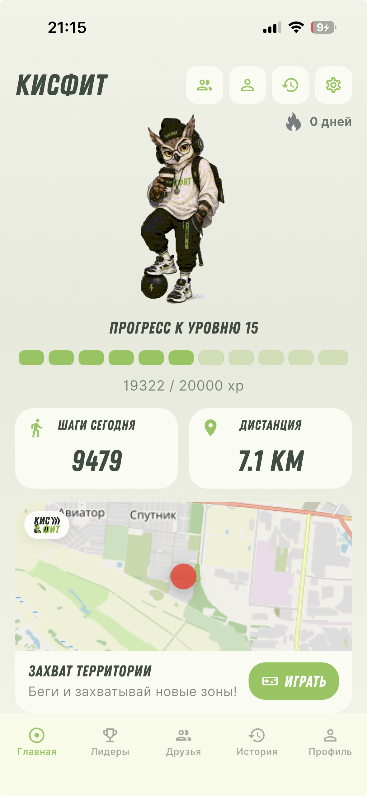
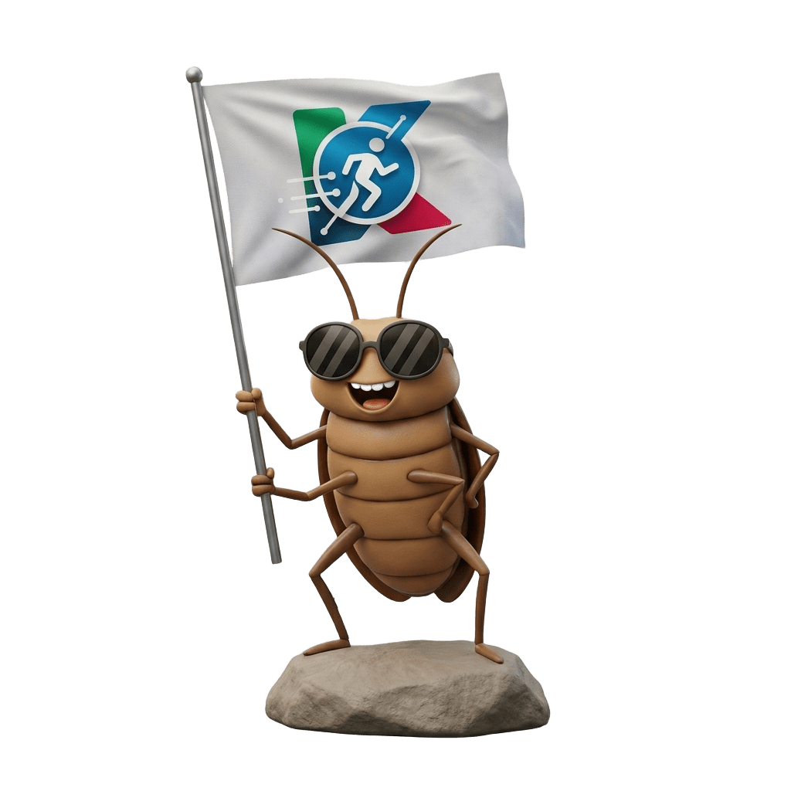
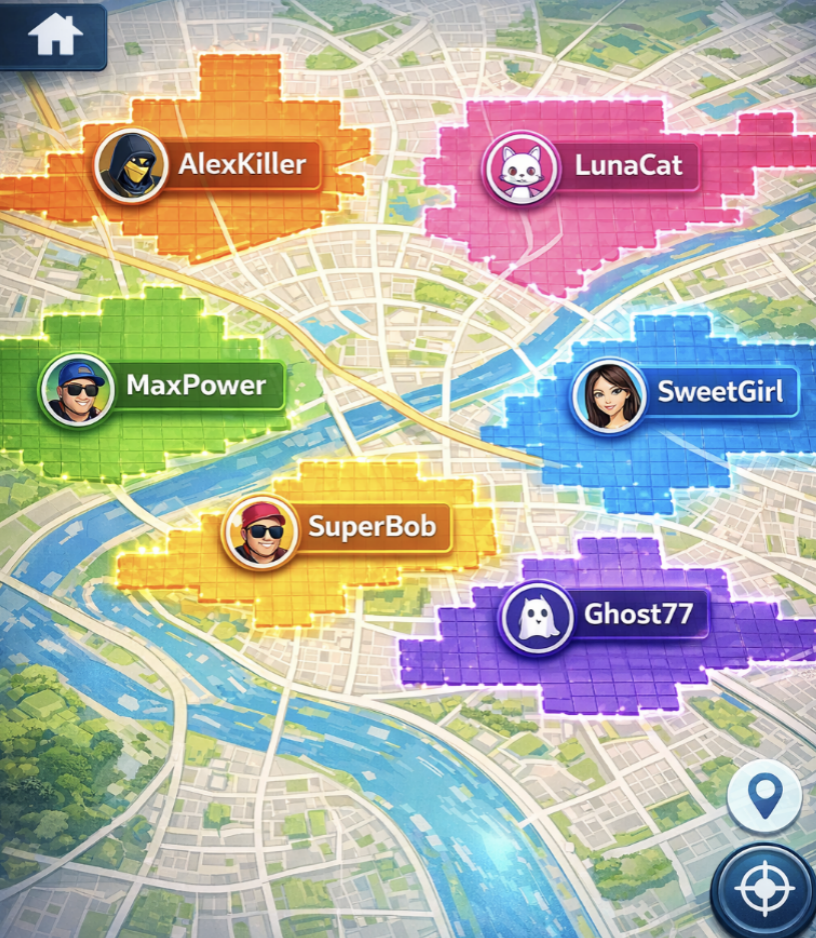
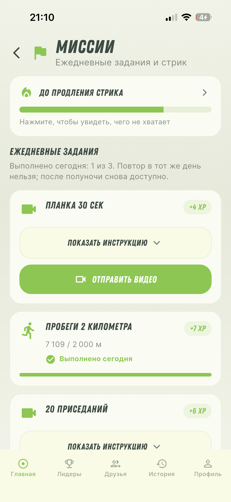
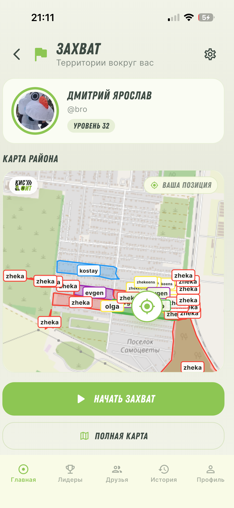
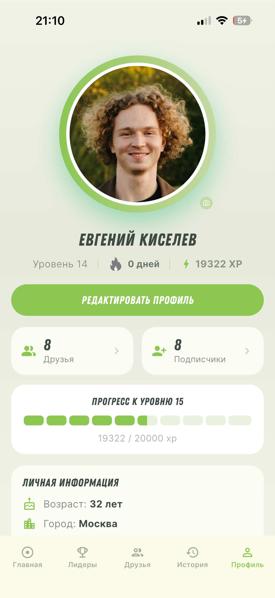
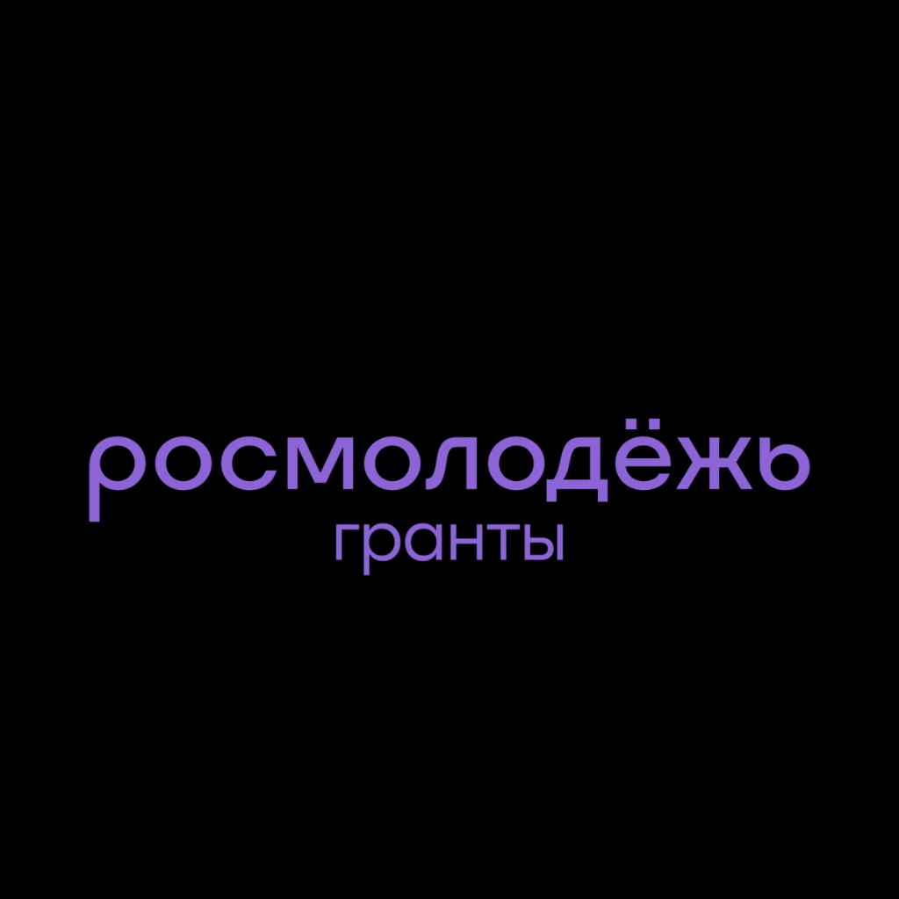

Зачем
Спорт бросают не из‑за лени, а из‑за скуки и невидимого прогресса. КИСФИТ даёт цели, обратную связь и азарт — как в игре.
КИСФИТ превращает прогулки и тренировки в городскую игру: парки и маршруты — точки захвата, команда — ваш клан. Упражнения проверяются через камеру смартфона: сделал — засчиталось. Уровни, миссии, турниры — прогресс без давления зала.


Спорт бросают не из‑за лени, а из‑за скуки и невидимого прогресса. КИСФИТ даёт цели, обратную связь и азарт — как в игре.
Для тех, кому надоели «просто шаги», для друзей, которые соревнуются за район, и для мягкого старта без зала.
Миссия → выполнение (шаги, GPS или упражнение с камерой) → XP и награда → стрик и рейтинг. Прогресс синхронизируется с сервером.
KISFIT (КИСФИТ) — геймифицированная фитнес-платформа. Мы делаем спорт «липким»: маленькие победы каждый день, видимый прогресс и соревнование с друзьями.
«Не просто шаги. Это экспедиция по своему городу — с миссиями, XP и друзьями рядом.»
Трекеры показывают цифру — и всё. Нет награды и смысла вернуться завтра, мотивация тает за первую неделю.
Миссии, уровни, стрики, территории и челленджи — движение с игровой обратной связью и реальной пользой для здоровья.
Короткие сессии, серия дней без упрёков за пропуск, прогресс в профиле и соревнование с друзьями.
Не один экран со счётчиком — экосистема из связанных модулей: от миссий до захвата территорий и магазина XP.
Ежедневные и ручные задания: шаги, дистанция, упражнения с видео-подтверждением через камеру.
Опыт за активность. Новые уровни открывают награды, персонажей и возможности.
Замкнутый GPS-маршрут — площадь на карте OpenStreetMap под вашим цветом.
GPS-треки, интервальные программы, история и статистика сессий.
Соревнования с друзьями, таблицы лидеров и турниры с наградами.
Цепочка активных дней, коллекции персонажей, награды турниров.
Аватар, настройки видимости, подписчики и лента активности.
Общение с друзьями в приложении — маршруты, координация, победы.
Обмен накопленного опыта на внутриигровые предметы.
HealthKit (iOS) и Health Connect (Android) — шаги подтягиваются автоматически.
Напоминания о миссиях, стриках и событиях через Firebase.
Не давим дисциплиной — делаем так, чтобы было легче начать, приятно продолжать и не терять серию.
Понятные цели: шаги, прогулка, лёгкая активность. Закрыл миссию — сразу награда. Так проще не бросить на старте.
Силовые и координация, челленджи с азартом: соревнуйся с собой вчерашним и забирай бонусный XP.
Стрик — цепочка побед подряд. Чуть‑чуть каждый день, без марафона. Пропустил — начни заново без упрёков.
XP и уровни превращают прогресс в игру. Новые герои и кастомизация профиля мотивируют не меньше цифр.
Двигайся — и «закрашивай» карту: район, парк, маршрут. Прогулка превращается в квест.
Выбери маршрут, закрой зону, удержи серию — результат виден на карте.

Главный экран, миссии, прогресс и профиль — в одном приложении, меньше лишних шагов.




Поставил — открыл — пошёл. КИСФИТ поможет захотеть повторить завтра.
Подписывайтесь на каналы, задавайте вопросы и помогайте улучшать продукт.
Как устроен КИСФИТ, что нужно для старта и чего от приложения ожидать.
В миссиях с упражнениями камера смартфона смотрит на движение и считает повторения: сделали подход — он засчитывается, отдельно ничего подтверждать не нужно. Видео нужно только для проверки выполнения и обрабатывается алгоритмами распознавания. Камера запрашивается в момент такой миссии, а не для обычных прогулок и шагов. Что именно сохраняется и зачем, написано в политике конфиденциальности.
Это режим, в котором прогулка становится маршрутом на карте. Вы идёте с включённым GPS и замыкаете контур — парк, двор или свой маршрут. На карте OpenStreetMap появляется полигон вашего цвета: территория под вашим контролем. За захват и удержание начисляется XP. За те же районы можно соревноваться с друзьями, командой и другими игроками в городе: кто закрыл зону, тот её удерживает.
Для профиля — имя, город, аватар и то, что вы сами заполните при регистрации. Для тренировок и захвата территорий — геолокация и маршрут на карте. Шаги и дистанция считаются в приложении и, если разрешите, подтягиваются из HealthKit на iPhone или Health Connect на Android. Камера и видео нужны только для упражнений и контента, который вы сами отправляете в миссиях и чатах. Мы не продаём эти данные и не отдаём их для рекламы третьих лиц. Полный перечень, сроки хранения и удаление аккаунта — в политике конфиденциальности.
Приложение делает ИП Киселёв Евгений Витальевич (Evgeniy Kiselev). Это молодёжный проект: разработка, публикация в магазинах и сервер идут при поддержке Росмолодёжь.Гранты, грант выигран на форуме «Алтай. Территория развития». Продукт в активной разработке — миссии, территории, рейтинги и остальные модули обновляются. Вопрос или ошибку можно отправить через форму поддержки, в Telegram или на zhekap26@gmail.com.
На iPhone и Android. Основной способ установки — магазины: App Store, Google Play и RuStore. На Android файл APK можно скачать прямо с сайта — он открывается сразу, без пароля. После входа укажите имя, город и аватар и разрешите геолокацию, активность и уведомления: без них не посчитаются шаги, маршрут и напоминания о стрике.
Да. Миссии, тренировки, захват территорий, рейтинги, чаты и остальные базовые функции работают без подписки и без оплаты. Проект поддерживается грантом, поэтому обычное использование остаётся бесплатным. Если позже появятся отдельные платные опции, цена и состав будут показаны в приложении до покупки — ничего не спишется само.
Для входа, миссий, рейтингов, чатов и карты территорий — да: прогресс синхронизируется с сервером, а карта берёт тайлы OpenStreetMap по сети. Часть действий можно сделать без связи и отправить позже, когда интернет появится. Для живого маршрута и захвата территории нужны GPS и желательно улица: в помещении контур замыкается плохо. Шаги из HealthKit и Health Connect подтянутся при следующей синхронизации.
Трекер показывает число и на этом заканчивается. В КИСФИТ та же активность закрывает миссию: шаги, дистанция, тренировка или упражнение с камеры сразу дают XP, уровень и награду. Стрик считает дни подряд, без упрёка за пропуск — серию можно начать заново. Друзья видны в рейтинге, челленджах и чатах, а прогулка может захватить район на карте. Смысл не в ещё одном счётчике, а в причине вернуться завтра.
В подвале сайта: политика конфиденциальности и пользовательское соглашение. Их стоит прочитать до установки: приложение запрашивает геолокацию, камеру, уведомления и данные активности. Аккаунт и связанные с ним данные можно удалить на отдельной странице. Если ответа здесь не хватило — напишите через поддержку.

При поддержке
Грант выигран на форуме «Алтай. Территория развития». Открыть подробности →